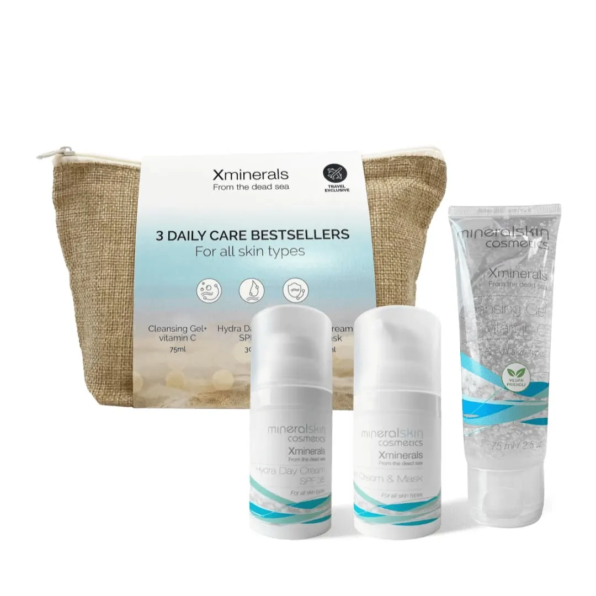

Hallo, ik ben Kitty
Schoonheidsspecialiste in mijn eigen praktijk aan de Heideweg in Didam. Bij mij bent u altijd de enige, en neem ik de tijd voor uw huid.

“Een bezoek aan de schoonheidsspecialiste hoort erbij. Net als de kapper.”
Of u nu man bent of vrouw: uw huid heeft professionele verzorging nodig. U kunt om verschillende redenen bij mij komen. Om even uit de dagelijkse routine te zijn en helemaal tot rust te komen. Maar het belangrijkste is dat uw huid in een goede conditie komt, en blijft.
Bij de eerste afspraak beoordeel ik uw huid en huidtype, en daar stemmen we de behandeling op af. Na de behandeling krijgt u geheel vrijblijvend een huidverzorgingsadvies voor thuis mee.
Weten dat je er goed verzorgd uitziet, geeft een zelfverzekerd gevoel. Daar doe ik het voor.

Hoe ik werk
Eén op één
Geen balie, geen wachtkamer, geen collega's die meeluisteren. U heeft mijn volle aandacht, van binnenkomst tot vertrek.
Eerst kijken
Ik begin bij uw huid, niet bij een vast programma. Elke behandeling kan ik uitbreiden met ampullen of werkstoffen als dat nodig is.
Eerlijk advies
U krijgt advies voor thuis mee. Vrijblijvend: u koopt alleen iets als u het zelf wilt.

Waar ik mee werk
Producten op basis van zouten en mineralen uit de Dode Zee, aangevuld met verzorging en make-up van merken waar ik zelf achter sta.
Graag tot ziens in mijn praktijk
Heideweg 2, 6942 NS Didam. Uitsluitend op afspraak.